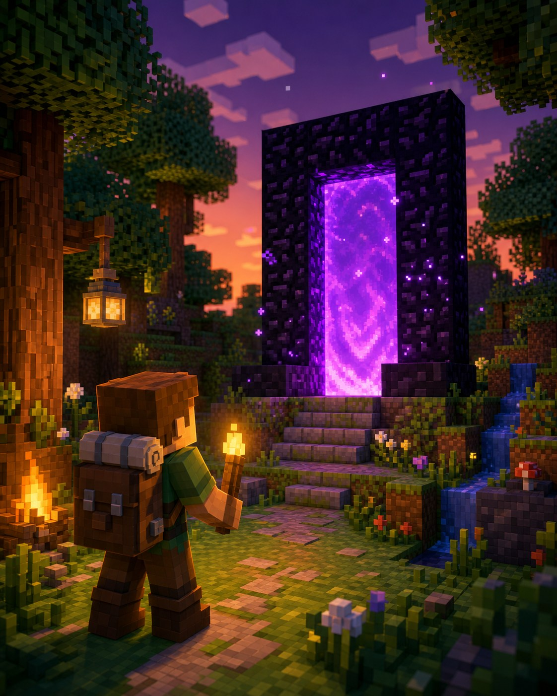

Велика пригода
Світ не закінчується вдома
Портал —
це двері
в інший світ.
Незер скорочує далекі дороги та дає речі для зіль і шляху до Енду.

Навіщо це потрібно?
Один блок у Незері дорівнює восьми блокам у звичайному світі. Там також є фортеці, іфрити та інгредієнти для зіль.
↔ скорочує шлях✦ веде до зіль↑ відкриває Енд
Три прості дії
Як підготувати портал
1Збери обсидіанПотрібна рамка порталу+
Зроби вертикальну рамку з обсидіану. Кути можна не заповнювати.
2Запали всерединіНайпростіше — кресалом+
Використай кресало на внутрішньому нижньому блоці рамки. Фіолетова поверхня означає, що портал працює.
3Не стрибай без наборуЇжа, блоки, зброя та кремінь+
Залиши біля порталу скриню. У Незері легко заблукати або зламати інструменти.
Портал: як це виглядає
Обсидіанова
рамка
+рамка
Кресало
→Портал у
Незер
Незер
● Запиши координати порталу перед першою мандрівкою.
!
Підказка мандрівникові
Важливо знати
Вода там зникає
Не покладайся на відро води як на звичайний захист.
Портал можна погасити
Тримай кресало, щоб запалити його знову.
Запам’ятай дорогу
Блоки-маркери допоможуть повернутись додому.
5
Маленьке завдання
Спробуй за 5 хвилин
- Підготуй скриню для мандрівки.
- Поклади їжу, блоки й кресало.
- Запиши координати бази.